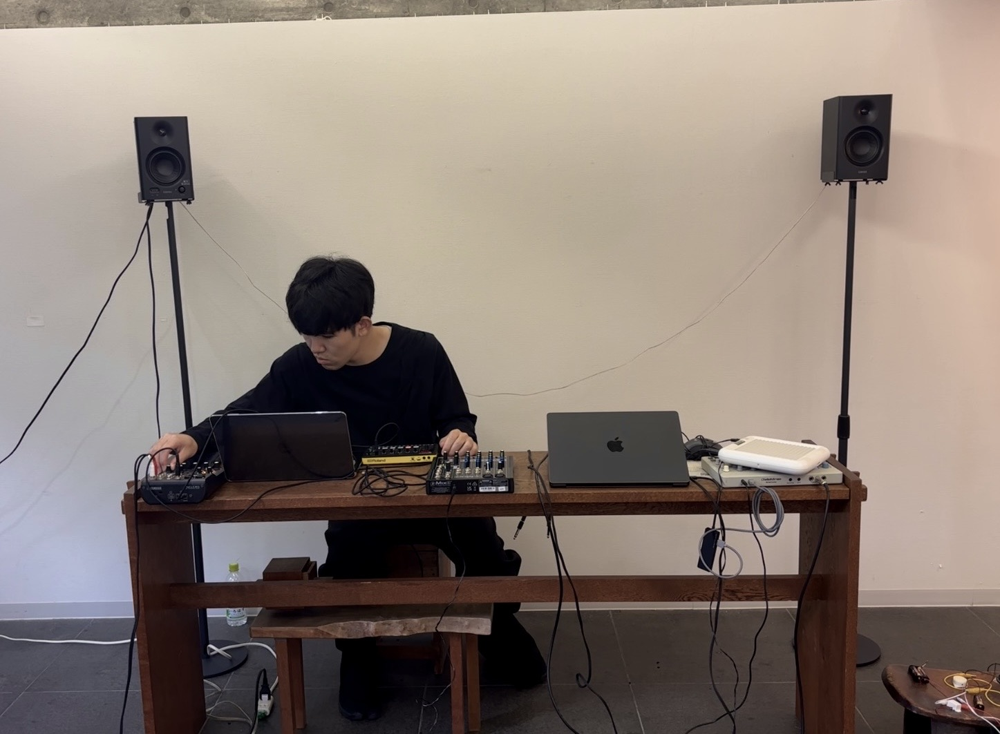

Solo Exhibition — 2026
初個展「OTOATO」
OTOATO／初個展／2026.9.19 – 9.23／GALLERY工+WITH／
OTOATO／初個展／2026.9.19 – 9.23／GALLERY工+WITH／

01
展示について
About金子淳平にとって初めての個展。これまで発表してきた「絵画を聴く」の展示に加え、 本展のために制作した新作を、4つの章に分けて発表した。
絵画を音で拡張し、誰もが作品の空間に入り込み「実感」できる環境を目指した制作を、 ひとつの会場でまとめて体験できる機会となった。
会期・会場
2026.9.19 SAT – 9.23 WED 11:00–19:00／GALLERY工+WITH（新高円寺駅徒歩3分）
02
構成
Chaptersこれまでの実践を4つの章に分けて紹介した。
- I 絵画を聴く：絵の中に鳴っていたかもしれない音の風景を立ち上げ、視覚や言葉だけに頼らずに作品の世界へ入り込むための試み。全盲の友人と美術館へ行った経験がきっかけだった。
- II 関係性：他者との関わりや、その場の時間を音に変換しながら共有してきた、ワークショップやセッションの実践をまとめた章。
- III 情報とエモーション：「残るもの（データ）」に、もう一度「消えるもの（現象）」や「朽ちるもの（物質）」の感覚を取り戻せないかと考えた作品群。
- IV ひらく：大学3年生の夏、音の金子淳平と建築の鏡理吾の2人で、高島平団地の一室に1週間滞在。その記録と対話、循環のモデルを1冊のZINEとして書き上げた。
出展作品
Chapter I：絵画を聴く／絵画の音響的拡張における鑑賞体験と対話の創出 Chapter II：気配に触れる／ミキキの交差点／線を聴く Chapter III：Resonance（福井県鯖江市 西山公園）／繋がり、朽ちる（新作） Chapter IV：ZINE『Reunir』（1週間でメディアをつくる）
03
セッション
Sessions会期中5日間、毎日ライブセッションを開催した。電子音響、工芸、VJ、カリンバ、フィールド レコーディングなど、その都度異なる領域のアーティストと共に。
04
写真
Photos

